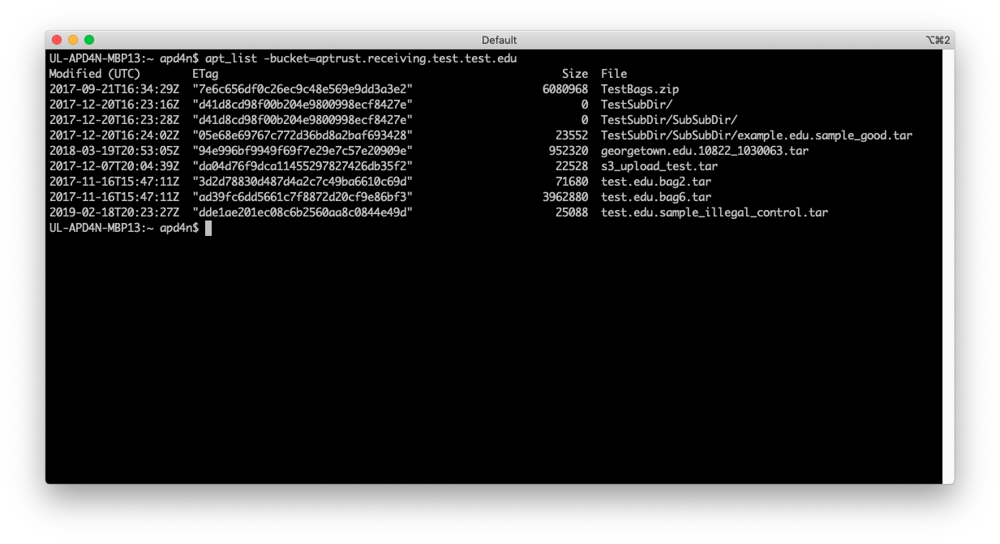

Partner Tools
Warning
This page describes the old version 2 partner tools, which are now deprecated. Please see the docs for the new, version 3 partner tools, which add support for creating bags and interacting with the APTrust Registry.
Deprecated version 2 command line tools for Mac, Linux, and Windows are available through the links below:
Each of these tools returns specific exit codes, so you can integrate them into your scripts. You can view any program's built-in documentation by passing the --help flag.
List of Partner Tools
In addition to our graphical tool for bagging and uploading, DART, APTrust also distributes a suite of command-line tools.
These tools use less memory and generally less CPU than DART. They include:
| Tool | Description |
|---|---|
| apt_check_ingest | Queries Pharos to check the ingest status of a bag. This requires a Pharos API key. See the configuration section below. |
| apt_validate | Validates bags (tarred or untarred) before uploading them for ingest or after downloading them from the restoration bucket. |
| apt_upload | Uploads bags to your receiving buckets for ingest. Requires AWS keys be present in your config file. See below. |
| apt_list | Lists the contents of your receiving and restoration buckets. Requires AWS keys. |
| apt_download | Downloads restored bags from your restoration buckets. Requires AWS keys. |
| apt_delete | Deletes restored bags from your restoration buckets. Requires AWS keys. |
Note that each of these tools has a --help option to display available flags,
output formats, and return codes.
Configuration File
All of the tools except apt_validate require a simple config file with five name-value pairs. Note that quotes are optional, and comment lines begin with a hash mark.
# Config for apt_upload and apt_download
AwsAccessKeyId = 123456789XYZ
AwsSecretAccessKey = THIS KEY INCLUDES SPACES AND DOES NOT NEED QUOTES
ReceivingBucket = 'aptrust.receiving.universityname.edu'
RestorationBucket = "aptrust.restore.universityname.edu"
DownloadDir = "/home/josie/downloads"
AptrustApiUser = "archivist@example.edu"
AptrustApiKey = "f887afc5e1624eda92ae1a5aecdf210c"
If you prefer not to put your AWS keys in the config file, you can put them into environment variables called AWS_ACCESS_KEY_ID and AWS_SECRET_ACCESS_KEY.
The config file should include the following variables:
-
ReceivingBucket: The name of the S3 bucket that will hold your uploaded APTrust bags that are awaiting ingest. E.g.
aptrust.receiving.college.edu. -
RestorationBucket: The name of the S3 bucket that will hold your restored APTrust bags. E.g.
aptrust.restore.college.edu. -
DownloadDir: The local directory in which to save files downloaded from your APTrust restoration bucket. The APTrust config currently does not expand
~to your home directory, so use an absolute path to be safe. -
AptrustApiUser: The email address for logging in to APTrust's Pharos REST API.
-
AptrustApiKey: Your API key for the Pharos REST API. This key must match the user email. (That is, joe@example.com cannot log in with a key that was issued to beth@example.com.)
If you save your config file as ~/.aptrust_partner.conf in Linux/Mac or as %HOMEPATH%\.aptrust_partner.conf under Windows, you will not have to specify a --config option when you run the tools. Otherwise, run the tools with the --config file pointing to the full path of your configuration file.
Below is a screenshot of apt_list showing the contents of an AWS receiving bucket.

apt_check_ingest shows the ingest status of items that match a specified file name.